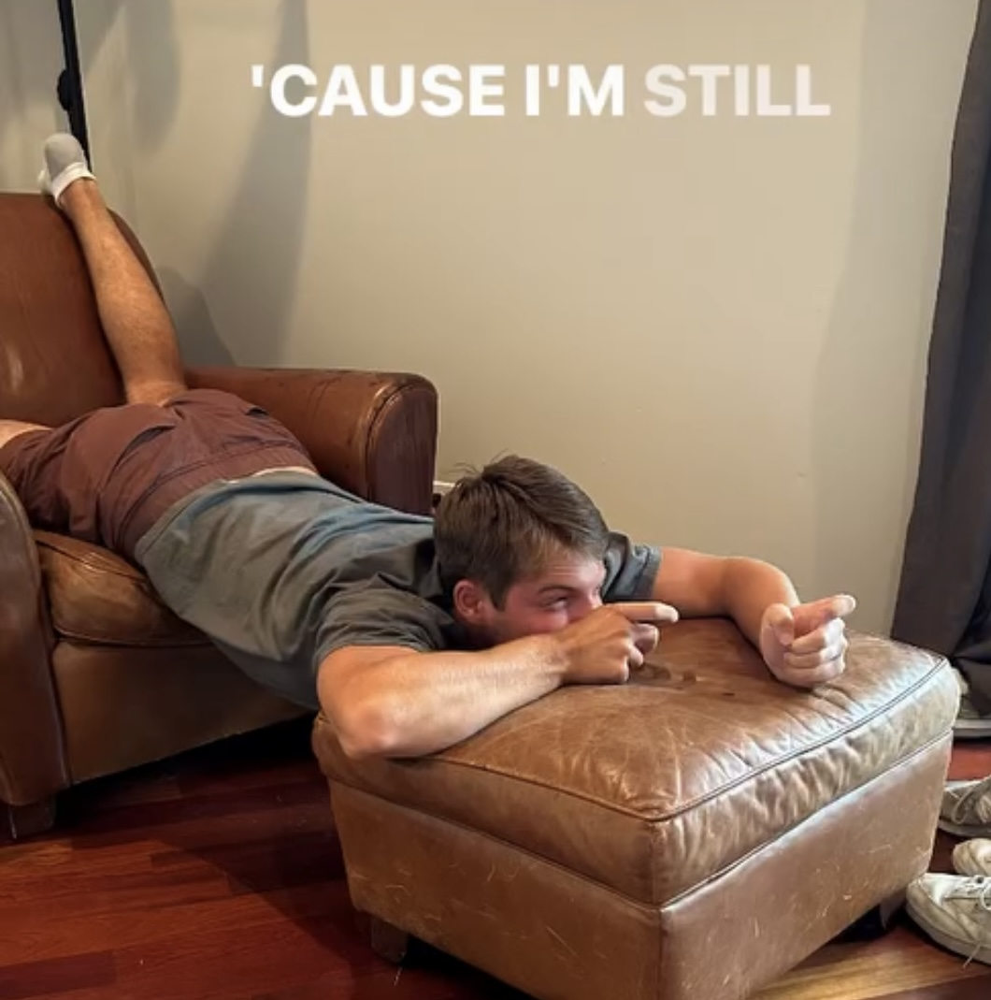
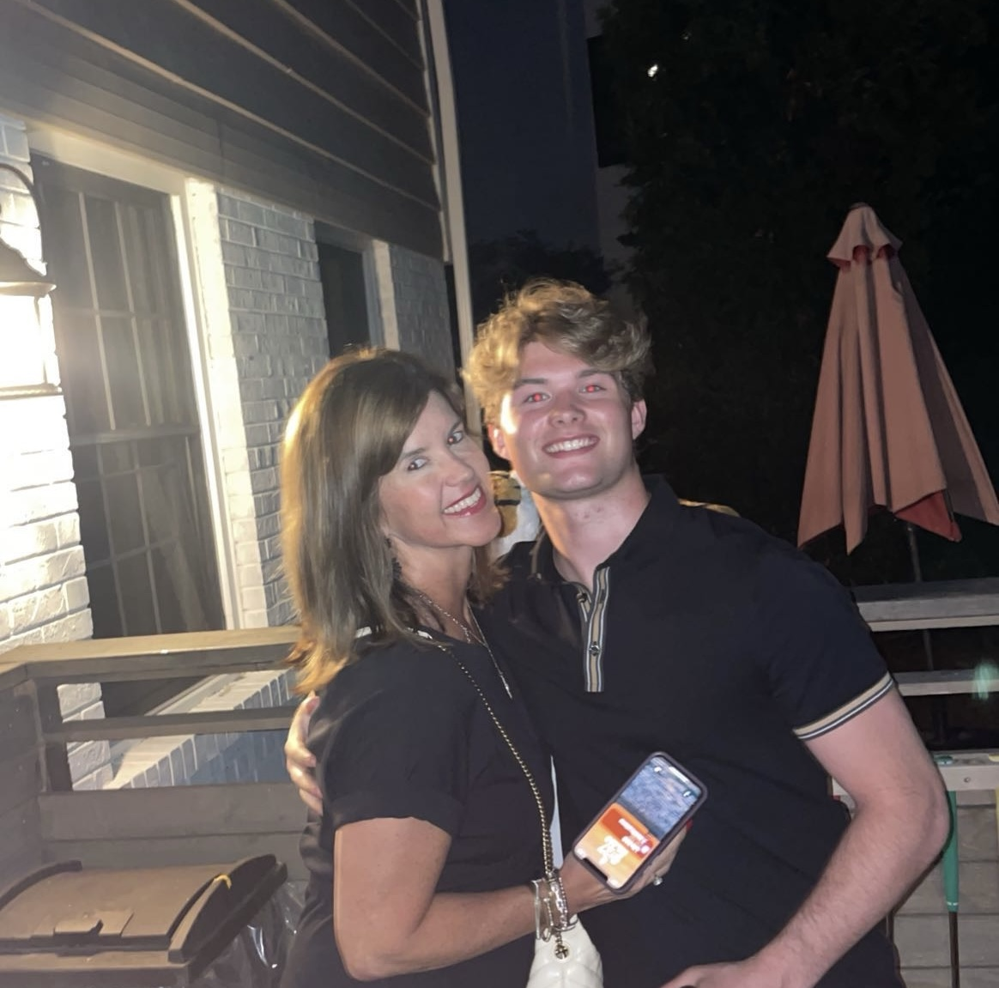
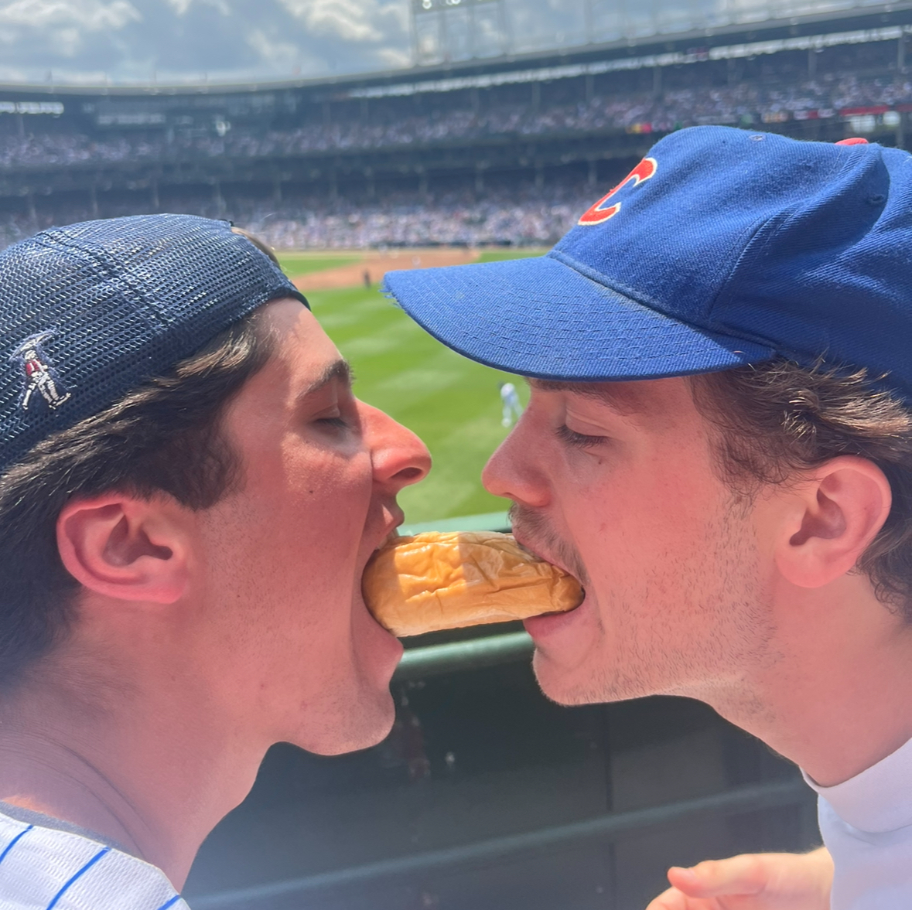
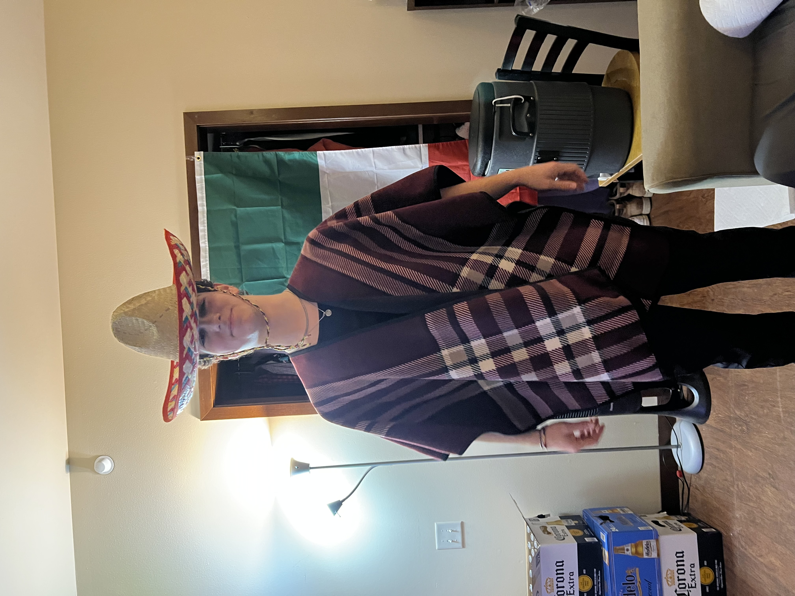

Players
Sam "Grover Mcginstry" Bowerman
Regarded as one of the greatest players to touch a mallet. Sam is also Roslyn National's highly coveted commisoner

Huck "Finkelstein" Fields
Statistical leader in Poisons Per Game, Huck uses his jewish weather-controlling powers to give himself a leg up on his game
Michael "Hoodie Mike" Gorman
The elusive "Hoodie Mike" uses his cloak of secrecy to conceal his next move

Trevor "Rex" Mills
Yes that's his real middle name. Great guy, very lovely mother

Max "Grucy" Grucella
Elliot Grucella's older brother
Connor "Grey Wolf" Crilly
Connor discovered croquet whilst on the German U-boat "Grey Wolf". His stern authority he developed as a Nazi Kommandant and SS Officer shows through his fierce competitiveness on the course

Matthew "The Duality of Man" Kramer
Matthew discovered the game of croquet whilst defending an Iraqi-American Consulate. Matthew exemplifies the duality of man while on the course.

Colin "Sack" Nuttall
Colin uses his artifically large nutsack to block off wickets and deflect balls away from him.